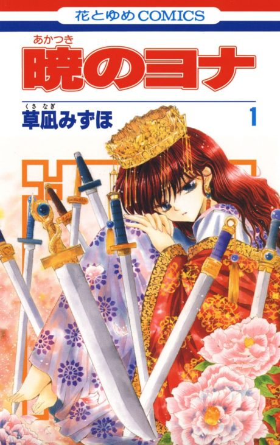

Anime
Anime
Manga2014 · Action, Adventure, Comedy
Yona of the Dawn
暁のヨナ
AniList7.9
Animeter—
Episodes24 ep
MangaCh. 48
Is it worth pushing through?
Built from what visitors report across all 24 episodes.
Loading reports…Checking what other people said about this one.
Sign in with your email at the top of the page to add your report.